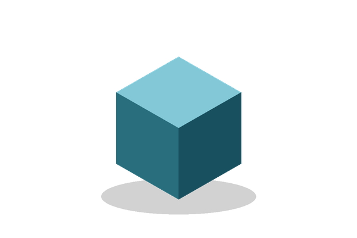

Магазин ёмкостей
О магазине
Мы продаём ёмкости двух форм. Как выбрать:
- Определите объём жидкости.
- Выберите форму:
- куб — экономит место на полке;
- объём считается по ребру A;
- цилиндр — удобно переливать;
- объём считается по радиусу R и высоте H.
- куб — экономит место на полке;
- Проверьте на странице «Задача 1007», поместится ли жидкость.
Каталог


Таблица моделей
Нажмите на миниатюру, чтобы открыть большое изображение 600×400 в новом окне.
| Модель | Фото | Объём | Ссылки |
|---|---|---|---|
| Куб | V = A³ | Заказать, о кубе | |
| Цилиндр | | V = π·R²·H | Заказать, о цилиндре |